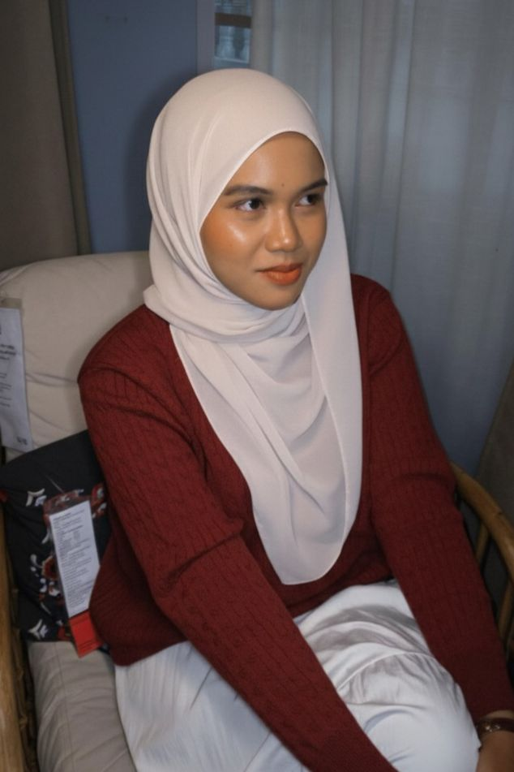

🎀 🎀 🎀 🎀 🎀 🎀 🎀 🎀 🎀 🎀 🎀 🎀 🎀 🎀 🎀 🎀 🎀 🎀
My Biodata
"Small steps lead to big journey."

| Full Name | Intan Zafirah binti Maziza |
|---|---|
| Date of Birth | 04/06/2005 |
| State | Kota Sarang Semut |
| Nationality | Malaysia |
| Hobby | Singing and reading novel |
| Phone Number | 012-3986889 |
| intan05@gmail.com |
I was born at Hospital Besar Alor Setar and grew up in the beautiful state of Kedah. Since I was young, I’ve been passionate about the arts and exploring new ideas. I enjoy singing and reading novels, and I can vibe with almost any music genre. I’m also a huge podcast lover, always curious to listen to different topics that inspire and entertain.
Podcasts have also become a big part of my life, they’re like a lullaby, white noise, or comforting background that I can always rely on. Whether I’m relaxing, studying, or just unwinding, listening to different topics helps me feel inspired, entertained, and connected to the world around me.
🎶 Favorites Band 🎶
- Spider
- XPDC
- Exists
- Wali
- Maroon 5
🎶 Favorites Songs 🎶
- Tapi Bagaimana
- Cintamu Mekar di Hati
- Itu Kamu
- Percaya Padaku
- Drag Me Down
📽️Favorites Youtuber📽️
- Nad Syhra
- Aisyah Habshee
- Azfar Heri
🎙️Favorites Podcast🎙️
🎀 🎀 🎀 🎀 🎀 🎀 🎀 🎀 🎀 🎀 🎀 🎀 🎀 🎀 🎀 🎀 🎀 🎀